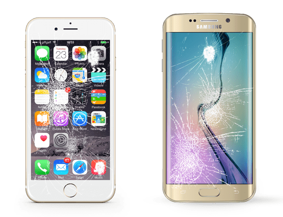

 <!-- BEGIN: Before & After Slider -->
<section id="before-after-slider-section" style="padding:2rem 1rem; max-width:450px; margin:auto;">
  <div class="slider-wrapper" id="slider">

    <!-- BASE IMAGE (AFTER) -->
    
    <div class="label after">After</div>

    <!-- TOP IMAGE (BEFORE) -->
    <div class="after-layer" id="afterLayer">
      
      <div class="label before">Before</div>
    </div>

    <!-- DIVIDER LINE & HANDLE -->
    <div class="divider-line" id="line"></div>
    <div class="handle" id="handle">▲<br>▼</div>

  </div>
</section>

<style>
/* --- SLIDER STYLES (ISOLATED) --- */
#before-after-slider-section {
  font-family: Arial, sans-serif;
}

#before-after-slider-section .slider-wrapper {
  max-width: 420px;
  margin: auto;
  position: relative;
  border-radius: 12px;
  overflow: hidden;
  box-shadow: 0 12px 30px rgba(0,0,0,0.2);
  touch-action: none;
}

#before-after-slider-section .slider-wrapper img {
  width: 100%;
  display: block;
  user-select: none;
  pointer-events: none;
}

#before-after-slider-section .after-layer {
  position: absolute;
  top: 0;
  left: 0;
  height: 50%;
  width: 100%;
  overflow: hidden;
}

#before-after-slider-section .label {
  position: absolute;
  padding: 6px 12px;
  background: rgba(0,0,0,0.65);
  color: #fff;
  font-size: 13px;
  font-weight: 600;
  border-radius: 20px;
  z-index: 20;
  pointer-events: none;
}

#before-after-slider-section .label.before {
  top: 12px;
  right: 12px;
}

#before-after-slider-section .label.after {
  bottom: 12px;
  left: 12px;
}

#before-after-slider-section .divider-line {
  position: absolute;
  top: 50%;
  left: 0;
  width: 100%;
  height: 3px;
  background: #fff;
  z-index: 10;
}

#before-after-slider-section .handle {
  position: absolute;
  top: 50%;
  left: 50%;
  transform: translate(-50%, -50%);
  width: 44px;
  height: 44px;
  background: #fff;
  border-radius: 50%;
  box-shadow: 0 4px 12px rgba(0,0,0,0.4);
  z-index: 15;
  display: flex;
  align-items: center;
  justify-content: center;
  font-size: 12px;
  cursor: ns-resize;
}
</style>

<script>
document.addEventListener("DOMContentLoaded", function() {
  const slider = document.getElementById("slider");
  const afterLayer = document.getElementById("afterLayer");
  const handle = document.getElementById("handle");
  const line = document.getElementById("line");

  let dragging = false;

  function moveSlider(clientY) {
    const rect = slider.getBoundingClientRect();
    let pos = clientY - rect.top;
    pos = Math.max(0, Math.min(pos, rect.height));
    const percent = (pos / rect.height) * 100;

    afterLayer.style.height = percent + "%";
    handle.style.top = percent + "%";
    line.style.top = percent + "%";
  }

  /* TOUCH EVENTS */
  slider.addEventListener("touchstart", e => {
    dragging = true;
    moveSlider(e.touches[0].clientY);
    e.preventDefault();
  }, { passive: false });

  slider.addEventListener("touchmove", e => {
    if (dragging) {
      moveSlider(e.touches[0].clientY);
      e.preventDefault();
    }
  }, { passive: false });

  slider.addEventListener("touchend", () => dragging = false);

  /* MOUSE EVENTS */
  slider.addEventListener("mousedown", e => {
    dragging = true;
    moveSlider(e.clientY);
  });

  window.addEventListener("mousemove", e => {
    if (dragging) moveSlider(e.clientY);
  });

  window.addEventListener("mouseup", () => dragging = false);
});
</script>
<!-- END: Before & After Slider -->
